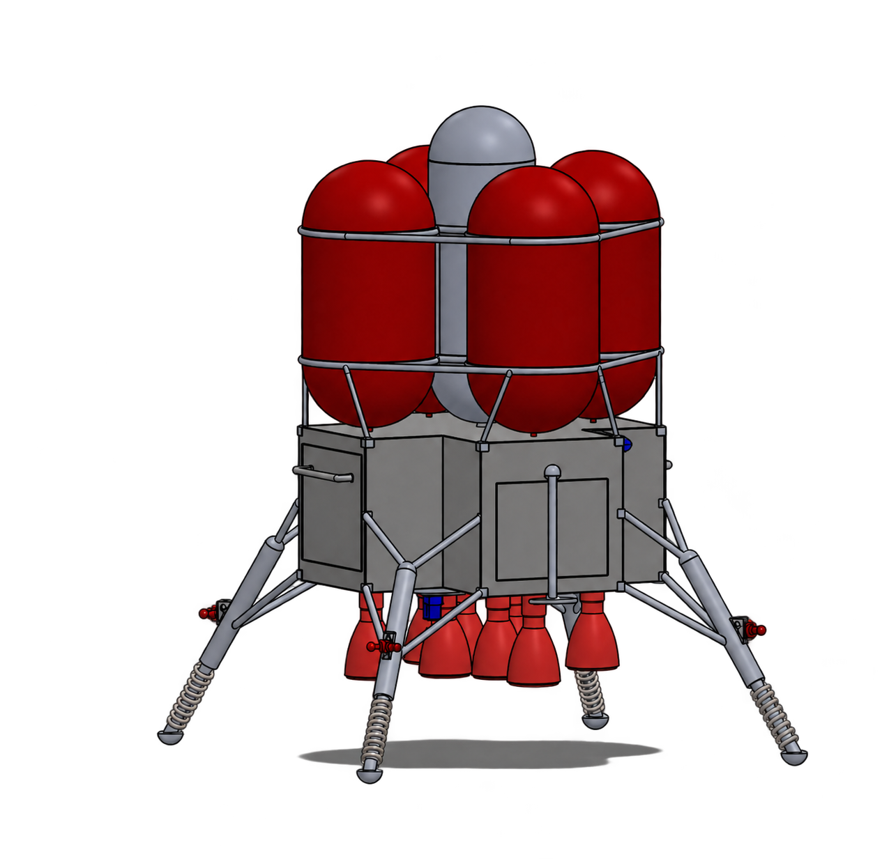
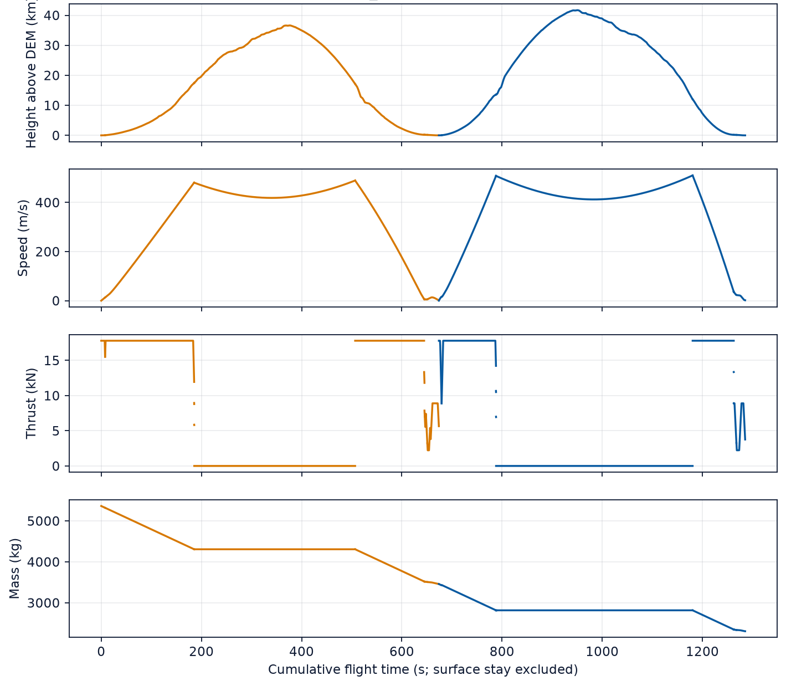
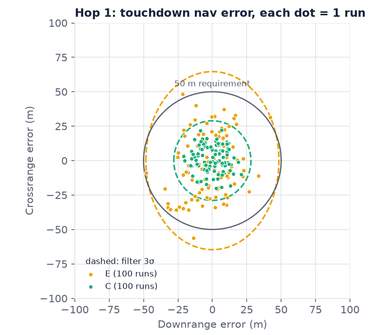
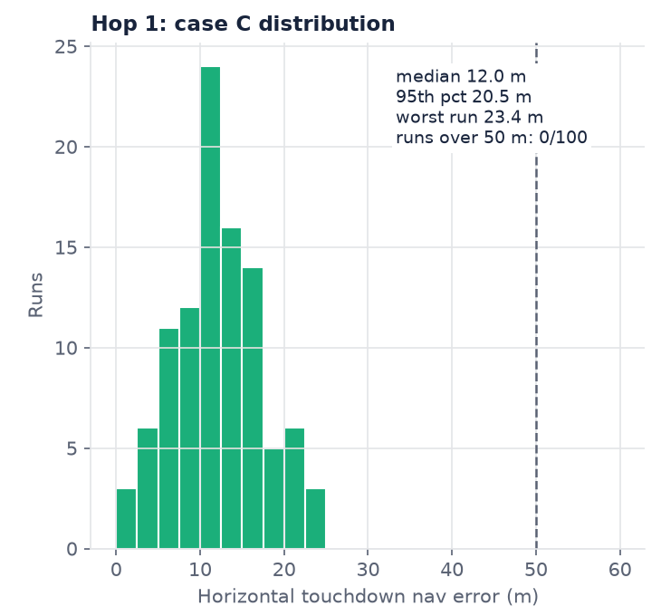
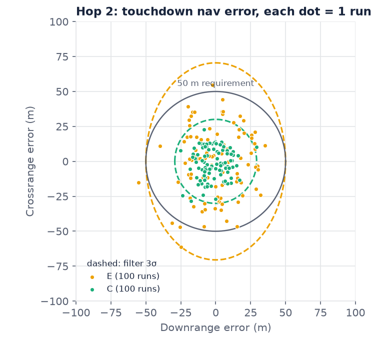
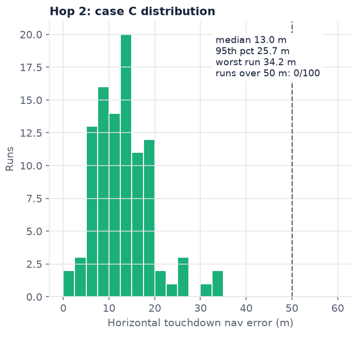

Lunar hopper trajectory optimization and navigation
Optimized a minimum-wet-mass trajectory for a lunar hopper operating at the lunar south pole. Validated a custom inertial navigation system using an error-state extended Kalman filter (EKF).
- Role
- Astrodynamics and guidance, navigation lead
- Supervisor
- Prof. Michael Generale
- Period
- Fall 2026
- Status
- Complete
- Completed
- Tools
- Python, CasADi, IPOPT, SciPy
Overview
The senior design brief is a lunar hopper, similar to NASA's Advanced Moonfall, that carries a 200 kg payload to sites 200 km from the lunar south pole and returns. I led astrodynamics and guidance and navigation. The trajectory work answers how small the vehicle can be and still fly the round trip over real terrain. The navigation work answers how well it knows its position at touchdown without GPS.


Approach
- Trajectory optimization. Minimize wet mass over the outbound and return hops with 3-DOF dynamics in a Moon-fixed frame, including lunar rotation and finite thrust. Hermite–Simpson collocation turns the problem into a nonlinear program with 21,537 variables and 39,998 constraints, solved with IPOPT through CasADi.
- Terrain. Clearance, landing and sensor-pointing constraints use a 30 m elevation model built from NASA LOLA data.
- Independent check. The optimized controls are re-propagated with SciPy and compared against the collocation solution before a flight is accepted.
- Navigation. A 15-state error-state extended Kalman filter fuses an inertial measurement unit, two star trackers and terrain-relative navigation fixes. A Monte Carlo study with random sensor errors compares six sensor combinations on both hops.
Results
- The selected design uses eight A2200 engines and a 2,000 kg dry mass, and needs a wet mass of 5,363 kg for the round trip.
- With the IMU, both star trackers and terrain-relative navigation, the median horizontal position-estimation error at touchdown is 12.0 m outbound and 13.0 m on return over 100 Monte Carlo runs, and the worst runs are 23.4 m and 34.2 m, inside the 50 m requirement.
- Without star trackers the 3σ error grows to 81 to 89 m and fails the requirement. On inertial sensing alone the estimate drifts 2.1 to 2.8 km.
- The optimized trajectory and mass results fed the structural design, propellant-tank sizing and engine-configuration trades.
Flight profiles and touchdown navigation
The navigation study uses 100 trials per sensor case and hop on a fixed trajectory. These plots show estimation error at touchdown. Terrain-relative navigation uses assumed 50 m per-axis position noise at 0.2 Hz.









